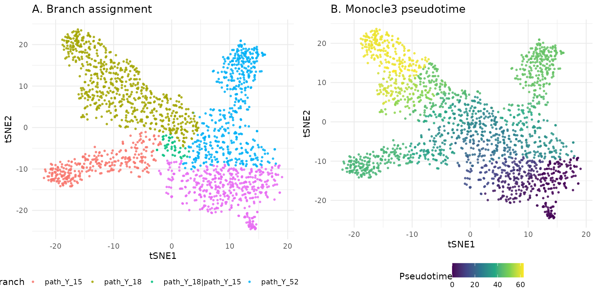
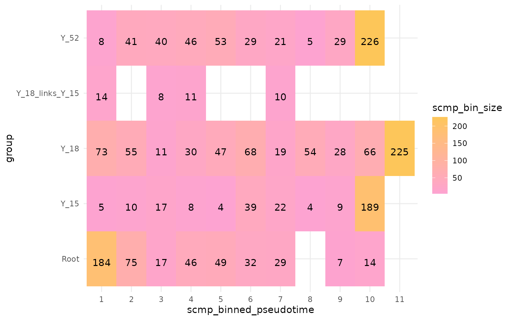
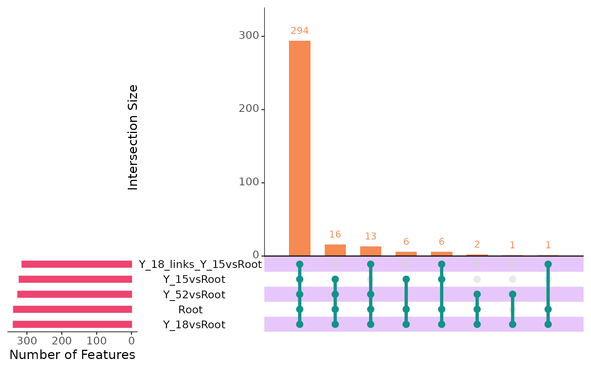
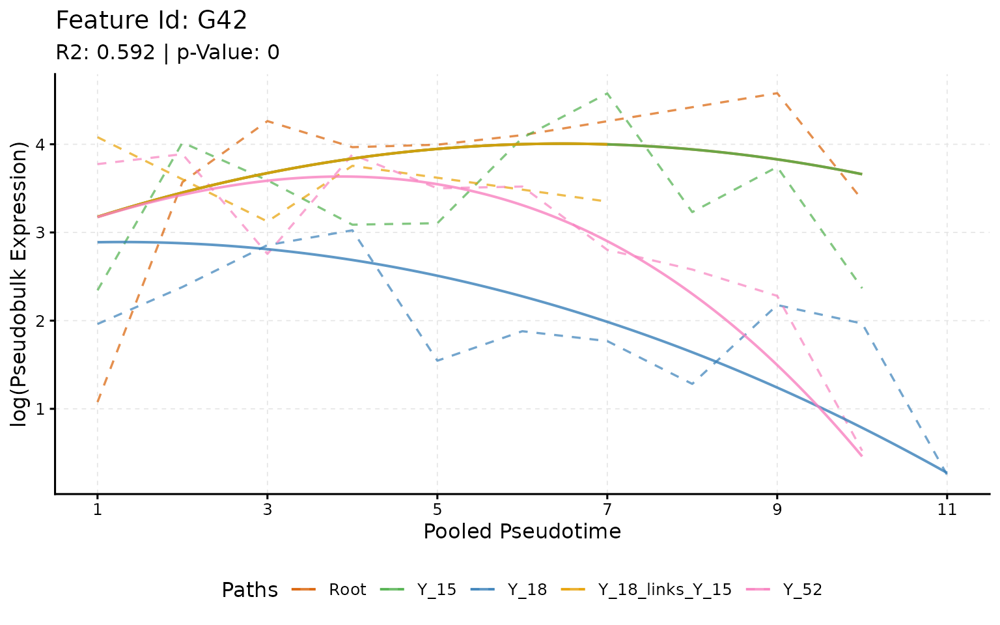
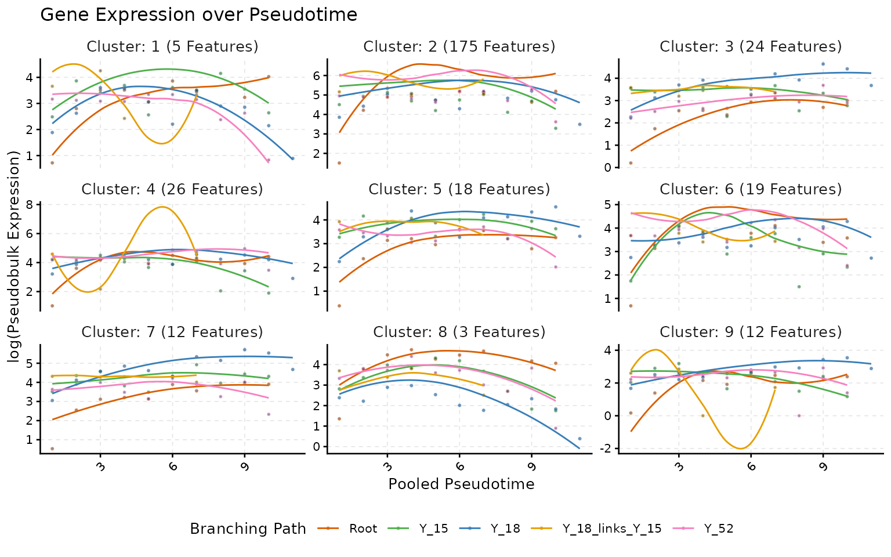
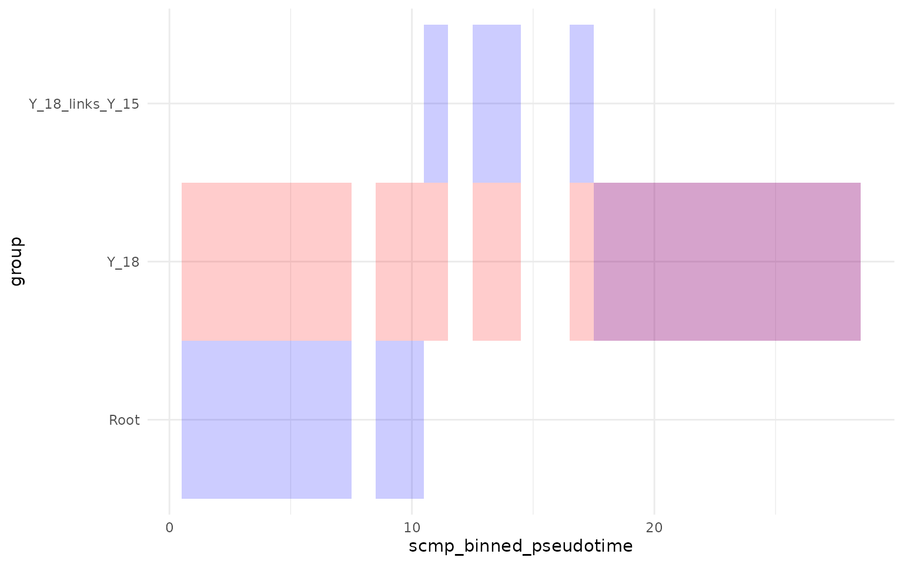
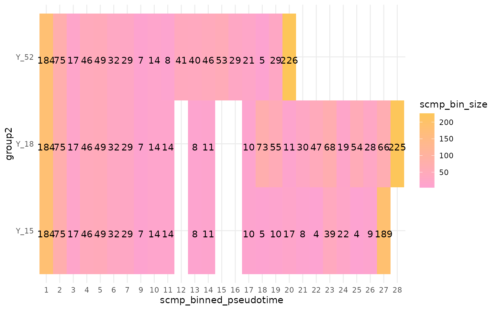
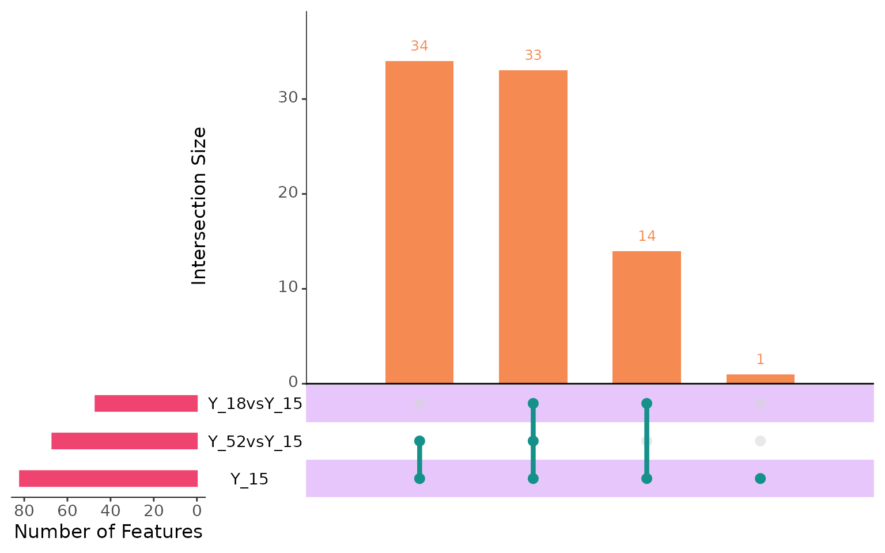
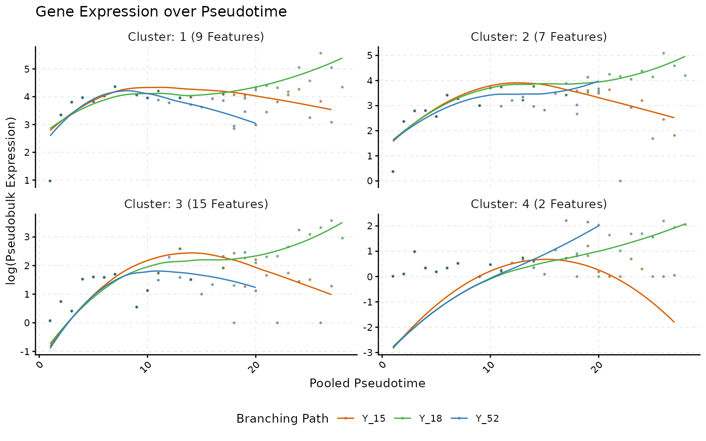

vignettes/Common-Root-Cells.Rmd
Common-Root-Cells.RmdscMaSigPro is designed to handle datasets with at least
two branches and requires that cells be assigned exclusively to these
branches. This vignette demonstrates how to evaluate datasets with
common root cells using the scMaSigPro approach. We use a
simulated multifurcating trajectory that was analysed with Monocle3 and
is bundled with the package as a SingleCellExperiment
object (multi.lin.sce), so everything below runs
offline.
Currently, scMaSigPro is available on GitHub and can be
installed as follows:
# Install BiocManager if needed, then scMaSigPro together with its
# Bioconductor dependencies from GitHub
if (!requireNamespace("BiocManager", quietly = TRUE)) {
install.packages("BiocManager")
}
BiocManager::install("BioBam/scMaSigPro")We will start by loading the necessary libraries.
library(scMaSigPro)
library(ggplot2)
library(SingleCellExperiment)For this vignette, we use a simulated dataset containing 1,977 cells
and 501 genes. The dataset was generated using the Dyntoy package and is
sourced from the tradeSeq
repository. It was simulated to have three branches and analysed
with Monocle3 (version 1.3.4): a principal graph was learned on a t-SNE
embedding, pseudotime was inferred from the root node, and every cell
was assigned to a branch of the graph. The result is bundled as
multi.lin.sce; see ?multi.lin.sce and
system.file("scripts", "make-multi-lin-sce.R", package = "scMaSigPro")
for the exact code that produced it.
data("multi.lin.sce", package = "scMaSigPro")
multi.lin.sce## class: SingleCellExperiment
## dim: 501 1977
## metadata(0):
## assays(1): counts
## rownames(501): G1 G2 ... G500 G501
## rowData names(0):
## colnames(1977): C2 C3 ... C2086 C2087
## colData names(3): cell_id group Monocle3_Pseudotime
## reducedDimNames(1): TSNE
## mainExpName: NULL
## altExpNames(0):## DataFrame with 3 rows and 3 columns
## cell_id group Monocle3_Pseudotime
## <character> <character> <numeric>
## C2 C2 root 0.244826
## C3 C3 root 0.821371
## C4 C4 path_Y_15 41.414270The colData holds the two columns
scMaSigPro needs: group, the hard assignment
of each cell to a branch of the trajectory, and
Monocle3_Pseudotime.
tsne <- as.data.frame(reducedDim(multi.lin.sce, "TSNE"))
colnames(tsne) <- c("tSNE1", "tSNE2")
tsne$group <- colData(multi.lin.sce)$group
tsne$pseudotime <- colData(multi.lin.sce)$Monocle3_Pseudotime
p_group <- ggplot(tsne, aes(x = tSNE1, y = tSNE2, colour = group)) +
geom_point(size = 0.7, alpha = 0.8) +
theme_minimal() +
theme(legend.position = "bottom") +
labs(title = "A. Branch assignment", colour = "Branch")
p_time <- ggplot(tsne, aes(x = tSNE1, y = tSNE2, colour = pseudotime)) +
geom_point(size = 0.7, alpha = 0.8) +
scale_colour_viridis_c() +
theme_minimal() +
theme(legend.position = "bottom") +
labs(title = "B. Monocle3 pseudotime", colour = "Pseudotime")
ggpubr::ggarrange(p_group, p_time, ncol = 2)
In panel A, the cells share a common root (root) and
then diverge. One branch leads directly to the endpoint
path_Y_52. The other continues as a segment shared by two
later branches (labelled path_Y_18|path_Y_15, the
link) before splitting into path_Y_15 and
path_Y_18. Panel B shows the universal Monocle3 pseudotime
that all branches share. These five elements (root, link and three
branches) are the input for the common-root-cells setup.
An important prerequisite for using scMaSigPro is the
hard assignment of cells to branches. This means that each cell must be
exclusively assigned to one branch. There are broadly two ways to assign
cells:
In Monocle3, each cell is associated with only one branch, implying a
hard assignment, which is suitable for scMaSigPro current
version. On the other hand, tradeSeq can handle both hard
and soft assignments. In Slingshot, for instance, cells can be part of
multiple branches, which is a form of soft assignment. One key
difference is that Slingshot assigns different pseudotimes to each
branch, whereas Monocle3 uses a universal pseudotime for all
branches.
The group column of multi.lin.sce was
derived from the Monocle3 object by following the steps of the tradeSeq
vignette: for every endpoint of the principal graph, find the
shortest path back to the root; a cell belongs to a path when its
closest principal node lies on it. A cell on all three paths is a root
cell, a cell on exactly two paths is a link cell, and a cell on one path
belongs to that branch. The recipe below shows how to do this on your
own cell_data_set; it is not evaluated here because
Monocle3 is not a dependency of scMaSigPro.
## Requires monocle3 and a `cds` with a learned graph and ordered cells.
## `cds` here had t-SNE coordinates stored in the UMAP slot, because
## monocle3::learn_graph() only works on the UMAP slot (monocle3 issue #242).
y_to_cells <- as.data.frame(
principal_graph_aux(cds)$UMAP$pr_graph_cell_proj_closest_vertex
)
y_to_cells$cells <- rownames(y_to_cells)
y_to_cells$Y <- y_to_cells$V1
root <- cds@principal_graph_aux$UMAP$root_pr_nodes
mst <- principal_graph(cds)$UMAP
endpoints <- names(which(igraph::degree(mst) == 1))
endpoints <- endpoints[!endpoints %in% root]
cellWeights <- lapply(endpoints, function(endpoint) {
path <- igraph::shortest_paths(mst, root, endpoint)$vpath[[1]]
path <- as.character(path)
df <- y_to_cells[y_to_cells$Y %in% path, ]
df <- data.frame(weights = as.numeric(colnames(cds) %in% df$cells))
colnames(df) <- endpoint
df
})
cellWeights <- as.matrix(do.call(cbind, cellWeights))
rownames(cellWeights) <- colnames(cds)
colnames(cellWeights) <- paste("path", colnames(cellWeights), sep = "_")
# Keep three endpoints and the cells that lie on at least one of their paths
cellWeights <- cellWeights[, c("path_Y_18", "path_Y_52", "path_Y_15")]
cellWeights <- cellWeights[rowSums(cellWeights) != 0, ]
group <- apply(cellWeights, 1, function(x) {
on <- names(x)[x == 1]
if (length(on) == 3) "root" else paste(on, collapse = "|")
})scMaSigPro object
We take the cell metadata from the bundled object and shorten the
branch labels: the path_ prefix is dropped, the shared
segment is written as Y_18_links_Y_15 (the separator that
sc.restruct() expects by default), and the root is
capitalised so that it sorts first and therefore becomes the reference
path of the model.
cellData <- as.data.frame(colData(multi.lin.sce))
cellData$group <- gsub("path_", "", cellData$group, fixed = TRUE)
cellData$group <- gsub("|", "_links_", cellData$group, fixed = TRUE)
# The alphabetically first label becomes the reference path. Capitalising
# "Root" keeps it first in every locale (uppercase sorts before lowercase in
# the C locale that R CMD build uses, and alphabetically elsewhere).
cellData$group[cellData$group == "root"] <- "Root"
table(cellData$group)##
## Root Y_15 Y_18 Y_18_links_Y_15 Y_52
## 453 307 676 43 498If a cell belongs to the root, it is part of all the paths. If a cell
is part of the link segment, it is part of both the Y_15
and Y_18 branches.
multi_scmp_ob <- create_scmp(
counts = as.matrix(counts(multi.lin.sce)),
cell_data = cellData,
ptime_col = "Monocle3_Pseudotime",
path_col = "group",
use_as_bin = FALSE
)
multi_scmp_ob## Class: ScMaSigProClass
## nCells: 1977
## nFeatures: 501
## Pseudotime Range: 0 62.806
## Branching Paths: Root, Y_15, Y_52, Y_18, Y_18_links_Y_15The first approach to using scMaSigPro to analyze
branches with common cells is to consider the common cells as a separate
group. For the interpretation we will evaluate whether a particular
gene’s expression in the common root cells and its downstream branch is
similar.
## Pseudotime based binning
multi_scmp_ob_A <- sc.squeeze(multi_scmp_ob)
## Plot bin information
plotBinTile(multi_scmp_ob_A)
In the above figure, we can see that scMaSigPro
considers each group as a separate branch. Running
scMaSigPro with this configuration will lead to a different
interpretation of the data. This will help us evaluate whether the
expression changes across branches compared to root. If you want to
consider the common root cells and branches together, you can follow the
next section.
Additionally, we can see that the common root cells and the resulting branches have the same values of binned pseudotime values. This is because the binning is performed independently over each branch.
# Polynomial Degree 3
multi_scmp_ob_A <- sc.set.poly(multi_scmp_ob_A, poly_degree = 3)
# Detect non-flat profiles
multi_scmp_ob_A <- sc.p.vector(
multi_scmp_ob_A,
verbose = FALSE
)
# Model refinement
multi_scmp_ob_A <- sc.t.fit(
multi_scmp_ob_A,
verbose = FALSE
)
# Apply filter
multi_scmp_ob_A <- sc.filter(
scmpObj = multi_scmp_ob_A,
rsq = 0.55,
vars = "groups",
intercept = "dummy",
includeInflu = TRUE
)
# Plot upset
plotIntersect(multi_scmp_ob_A)## Warning: `aes_string()` was deprecated in ggplot2 3.0.0.
## ℹ Please use tidy evaluation idioms with `aes()`.
## ℹ See also `vignette("ggplot2-in-packages")` for more information.
## ℹ The deprecated feature was likely used in the UpSetR package.
## Please report the issue at <https://github.com/hms-dbmi/UpSetR/issues>.
## This warning is displayed once per session.
## Call `lifecycle::last_lifecycle_warnings()` to see where this warning was
## generated.## Warning: Using `size` aesthetic for lines was deprecated in ggplot2 3.4.0.
## ℹ Please use `linewidth` instead.
## ℹ The deprecated feature was likely used in the UpSetR package.
## Please report the issue at <https://github.com/hms-dbmi/UpSetR/issues>.
## This warning is displayed once per session.
## Call `lifecycle::last_lifecycle_warnings()` to see where this warning was
## generated.## Warning: The `size` argument of `element_line()` is deprecated as of ggplot2 3.4.0.
## ℹ Please use the `linewidth` argument instead.
## ℹ The deprecated feature was likely used in the UpSetR package.
## Please report the issue at <https://github.com/hms-dbmi/UpSetR/issues>.
## This warning is displayed once per session.
## Call `lifecycle::last_lifecycle_warnings()` to see where this warning was
## generated.
scMaSigPro treated Root as the reference
for all branches. Starting from scMaSigPro version
0.0.4, plotIntersect(return = TRUE) returns
the intersection information as a data frame, with one column per gene
set.
shared_genes <- plotIntersect(multi_scmp_ob_A, return = TRUE)
head(shared_genes)## Y_15vsRoot Y_18vsRoot Y_18_links_Y_15vsRoot Y_52vsRoot Root
## G3 1 1 1 1 1
## G7 1 1 1 1 1
## G9 1 1 1 1 1
## G10 1 1 1 1 1
## G11 1 1 1 1 1
## G12 1 1 1 1 1In the upset plot above, we can see that there are 294 genes which
change among all branches and also change with pseudotime. We will
explore them later. First, let’s look at the genes that have similar
expression in the Root, the link segment and the
Y_15 branch: those genes are significant for
Y_52vsRoot and Y_18vsRoot but not for
Y_18_links_Y_15vsRoot or Y_15vsRoot.
## Similar expression in Root, the link segment and Y_15
gene_br_Y_15 <- rownames(shared_genes)[
shared_genes$Y_52vsRoot == 1 &
shared_genes$Y_18vsRoot == 1 &
shared_genes$Y_15vsRoot == 0 &
shared_genes$Root == 1 &
shared_genes$Y_18_links_Y_15vsRoot == 0
]
head(gene_br_Y_15)## [1] "G42" "G71"
plotTrend(multi_scmp_ob_A, feature_id = gene_br_Y_15[1], points = FALSE, lines = TRUE)
In the above plot, we can see that the gene G42 has a similar
expression in Root, the link segment and Y_15.
This is a good example of how scMaSigPro can be used to
identify genes that show similar patterns in the common root cells and
how different they are in other branches. The main idea is to set the
root as a reference and then compare the branches to the root.
Next we can explore the 294 genes that we have in the intersection. As it is hard to see them all at once, we will first perform clustering and then look at them in groups.
## Perform Clustering
multi_scmp_ob_A <- sc.cluster.trend(multi_scmp_ob_A)
# Plot Clusters
plotTrendCluster(multi_scmp_ob_A, verbose = FALSE, loess_span = 0.8)
Another approach is to reorder the pseudotime bins, meaning the bins representing the common root cells are ordered first, followed by the bins of the branches. This helps compare the gene expression of the common root cells together with the downstream branches.
## scmp_binned_pseudotime scmp_bin group scmp_bin_size scmp_l_bound
## Root_bin_1 1 Root_bin_1 Root 184 0.00
## Root_bin_2 2 Root_bin_2 Root 75 2.22
## Root_bin_3 3 Root_bin_3 Root 17 4.45
## Root_bin_4 4 Root_bin_4 Root 46 6.67
## Root_bin_5 5 Root_bin_5 Root 49 8.90
## Root_bin_6 6 Root_bin_6 Root 32 11.10
## scmp_u_bound
## Root_bin_1 2.22
## Root_bin_2 4.45
## Root_bin_3 6.67
## Root_bin_4 8.90
## Root_bin_5 11.10
## Root_bin_6 13.30The main idea is to update the values in the binned pseudotime column using an offset. Based on our dataset, we observe that Y_52 is a branch that directly originated from the Root. Therefore, the bins of the Y_52 branch should be aligned right after it. This means that the offset for the Y_52 branch will be the maximum value of the binned pseudotime of the root branch.
## Create a new df
Y_52_binned_data <- binned_data[binned_data$group %in% c("Root", "Y_52"), , drop = FALSE]
## Calculate Offset (Max Value of the root)
Y_52_offset <- max(Y_52_binned_data[Y_52_binned_data$group == "Root", "scmp_binned_pseudotime"])
## Add offset
Y_52_binned_data[Y_52_binned_data$group == "Y_52", "scmp_binned_pseudotime"] <- Y_52_binned_data[Y_52_binned_data$group == "Y_52", "scmp_binned_pseudotime"] + Y_52_offset
## Update bins and rownames
Y_52_binned_data$group2 <- "Y_52"
rownames(Y_52_binned_data) <- paste(Y_52_binned_data$group2, Y_52_binned_data$scmp_binned_pseudotime, sep = "_bin_")
head(Y_52_binned_data[, -2])## scmp_binned_pseudotime scmp_bin group scmp_bin_size scmp_l_bound
## Y_52_bin_1 1 Root_bin_1 Root 184 0.00
## Y_52_bin_2 2 Root_bin_2 Root 75 2.22
## Y_52_bin_3 3 Root_bin_3 Root 17 4.45
## Y_52_bin_4 4 Root_bin_4 Root 46 6.67
## Y_52_bin_5 5 Root_bin_5 Root 49 8.90
## Y_52_bin_6 6 Root_bin_6 Root 32 11.10
## scmp_u_bound group2
## Y_52_bin_1 2.22 Y_52
## Y_52_bin_2 4.45 Y_52
## Y_52_bin_3 6.67 Y_52
## Y_52_bin_4 8.90 Y_52
## Y_52_bin_5 11.10 Y_52
## Y_52_bin_6 13.30 Y_52For the other branches we will add an offset of both “link” and “Y_15|Y_18”.
## Create a new df
Y_18_binned_data <- binned_data[binned_data$group %in% c("Root", "Y_18_links_Y_15", "Y_18"), , drop = FALSE]
Y_15_binned_data <- binned_data[binned_data$group %in% c("Root", "Y_18_links_Y_15", "Y_15"), , drop = FALSE]
## Calculate Offset (Max Value of the root and Link)
Y_18_root_offset <- max(Y_18_binned_data[Y_18_binned_data$group == "Root", "scmp_binned_pseudotime"])
Y_18_link_offset <- max(Y_18_binned_data[Y_18_binned_data$group == "Y_18_links_Y_15", "scmp_binned_pseudotime"])
## Add link offset to branch Y_18
Y_18_binned_data[Y_18_binned_data$group == "Y_18", "scmp_binned_pseudotime"] <- Y_18_binned_data[Y_18_binned_data$group == "Y_18", "scmp_binned_pseudotime"] + Y_18_link_offset
Y_15_binned_data[Y_15_binned_data$group == "Y_15", "scmp_binned_pseudotime"] <- Y_15_binned_data[Y_15_binned_data$group == "Y_15", "scmp_binned_pseudotime"] + Y_18_link_offset
## Add root offset to (link+ branch)
Y_18_binned_data[Y_18_binned_data$group != "Root", "scmp_binned_pseudotime"] <- Y_18_binned_data[Y_18_binned_data$group != "Root", "scmp_binned_pseudotime"] + Y_18_root_offset
Y_15_binned_data[Y_15_binned_data$group != "Root", "scmp_binned_pseudotime"] <- Y_15_binned_data[Y_15_binned_data$group != "Root", "scmp_binned_pseudotime"] + Y_18_root_offset
## Update bins and rownames
Y_18_binned_data$group2 <- "Y_18"
rownames(Y_18_binned_data) <- paste(Y_18_binned_data$group2, Y_18_binned_data$scmp_binned_pseudotime, sep = "_bin_")
Y_15_binned_data$group2 <- "Y_15"
rownames(Y_15_binned_data) <- paste(Y_15_binned_data$group2, Y_15_binned_data$scmp_binned_pseudotime, sep = "_bin_")
# Create plot
ggplot() +
geom_tile(
data = Y_18_binned_data,
aes(x = scmp_binned_pseudotime, y = group), fill = "blue", alpha = 0.2
) +
geom_tile(
data = Y_18_binned_data,
aes(x = scmp_binned_pseudotime, y = group2), fill = "red", alpha = 0.2
) +
theme_minimal()
As we can see above, the tiles in blue represent the original bins,
while the red tiles represent the new bins of Y_18. At the
end, we also observe the overlap where the original bins of branch Y_18
are shifted to the end.
## Combine all metadata
new_binned_data <- rbind(Y_52_binned_data, Y_18_binned_data, Y_15_binned_data)
## Create a new object
multi_scmp_ob_A_manual <- multi_scmp_ob_A
## Update dense Metadata slot
cDense(multi_scmp_ob_A_manual) <- new_binned_data
## Set the group used for binning
multi_scmp_ob_A_manual@Parameters@path_col <- "group2"
## Perform Aggregation
multi_scmp_ob_A_manual <- pb_counts(
scmpObj = multi_scmp_ob_A_manual,
assay_name = "counts",
)
## Plot
plotBinTile(multi_scmp_ob_A_manual)
From scMaSigPro version 0.0.4 onwards, a
wrapper function was introduced to assist in ordering the bins. The
working of the wrapper function sc.restruct() is shown
below, and it works on fairly simplified datasets like the one
demonstrated in this vignette.
sc.restruct()
## Showcase sc.restruct wrapper
multi_scmp_ob_B <- sc.restruct(multi_scmp_ob_A,
end_node_list = list("Y_15", "Y_18", "Y_52"),
root_node = "Root", link_node_list = list("Y_18_links_Y_15"),
verbose = FALSE, link_sep = "_links_", assay_name = "counts", aggregate = "sum"
)
# Show the new path
plotBinTile(multi_scmp_ob_B)As we see in the plot above, the sc.restruct() wrapper
function performs the exact transformations internally. For more complex
trajectories, construct the bin table manually as shown in the previous
section.
# Polynomial Degree 3
multi_scmp_ob_B <- sc.set.poly(multi_scmp_ob_B, poly_degree = 3)
# Detect non-flat profiles
multi_scmp_ob_B <- sc.p.vector(
multi_scmp_ob_B,
verbose = FALSE
)
# Model refinement
multi_scmp_ob_B <- sc.t.fit(
multi_scmp_ob_B,
verbose = FALSE
)
# Apply filter
multi_scmp_ob_B <- sc.filter(
scmpObj = multi_scmp_ob_B,
rsq = 0.5,
vars = "groups",
intercept = "dummy",
includeInflu = TRUE
)
# Plot upset
plotIntersect(multi_scmp_ob_B)
Now, in the above scenario, Y_15 is treated as the reference, and we will look at the genes that are expressed differently compared to this branch. This approach will help us understand how genes are changing across the branches while considering the root cells for each of the downstream branches.
## Perform Clustering
multi_scmp_ob_B <- sc.cluster.trend(multi_scmp_ob_B,
k = 4, cluster_method = "kmeans"
)
## Plot Clusters
plotTrendCluster(multi_scmp_ob_B, verbose = FALSE)
sessionInfo(package = "scMaSigPro")## R version 4.6.1 (2026-06-24)
## Platform: x86_64-pc-linux-gnu
## Running under: Ubuntu 24.04.5 LTS
##
## Matrix products: default
## BLAS: /usr/lib/x86_64-linux-gnu/openblas-pthread/libblas.so.3
## LAPACK: /usr/lib/x86_64-linux-gnu/openblas-pthread/libopenblasp-r0.3.26.so; LAPACK version 3.12.0
##
## locale:
## [1] LC_CTYPE=C.UTF-8 LC_NUMERIC=C LC_TIME=C.UTF-8
## [4] LC_COLLATE=C.UTF-8 LC_MONETARY=C.UTF-8 LC_MESSAGES=C.UTF-8
## [7] LC_PAPER=C.UTF-8 LC_NAME=C LC_ADDRESS=C
## [10] LC_TELEPHONE=C LC_MEASUREMENT=C.UTF-8 LC_IDENTIFICATION=C
##
## time zone: UTC
## tzcode source: system (glibc)
##
## attached base packages:
## character(0)
##
## other attached packages:
## [1] scMaSigPro_0.0.4.9000
##
## loaded via a namespace (and not attached):
## [1] gridExtra_2.3.1 rlang_1.3.0
## [3] magrittr_2.0.5 otel_0.2.0
## [5] matrixStats_1.5.0 e1071_1.7-17
## [7] compiler_4.6.1 mgcv_1.9-4
## [9] venn_1.13 systemfonts_1.3.2
## [11] vctrs_0.7.3 stringr_1.6.0
## [13] pkgconfig_2.0.3 fastmap_1.2.0
## [15] backports_1.5.1 XVector_0.52.0
## [17] labeling_0.4.3 promises_1.5.0
## [19] rmarkdown_2.32 grDevices_4.6.1
## [21] UpSetR_1.4.1 ragg_1.5.2
## [23] purrr_1.2.2 xfun_0.61
## [25] cachem_1.1.0 graphics_4.6.1
## [27] jsonlite_2.0.0 later_1.4.8
## [29] DelayedArray_0.38.2 broom_1.0.13
## [31] parallel_4.6.1 R6_2.6.1
## [33] bslib_0.12.0 stringi_1.8.9
## [35] RColorBrewer_1.1-3 parallelly_1.48.0
## [37] car_3.1-5 GenomicRanges_1.64.0
## [39] jquerylib_0.1.4 Rcpp_1.1.2
## [41] Seqinfo_1.2.0 bookdown_0.48
## [43] assertthat_0.2.1 SummarizedExperiment_1.42.0
## [45] knitr_1.52 IRanges_2.46.0
## [47] splines_4.6.1 httpuv_1.6.17
## [49] Matrix_1.7-5 igraph_2.3.4
## [51] tidyselect_1.2.1 abind_1.4-8
## [53] yaml_2.3.12 admisc_0.41
## [55] plyr_1.8.9 lattice_0.22-9
## [57] tibble_3.3.1 Biobase_2.72.0
## [59] shiny_1.14.0 withr_3.0.3
## [61] S7_0.2.2 evaluate_1.0.5
## [63] base_4.6.1 desc_1.4.3
## [65] proxy_0.4-29 mclust_6.1.3
## [67] pillar_1.11.1 BiocManager_1.30.27
## [69] ggpubr_1.0.0 MatrixGenerics_1.24.0
## [71] carData_3.0-6 stats4_4.6.1
## [73] plotly_4.12.1 generics_0.1.4
## [75] S4Vectors_0.50.3 ggplot2_4.0.3
## [77] scales_1.4.0 BiocStyle_2.40.0
## [79] stats_4.6.1 xtable_1.8-8
## [81] class_7.3-23 glue_1.8.1
## [83] tools_4.6.1 datasets_4.6.1
## [85] data.table_1.18.6.1 ggsignif_0.6.4
## [87] fs_2.1.0 cowplot_1.2.0
## [89] grid_4.6.1 utils_4.6.1
## [91] tidyr_1.3.2 methods_4.6.1
## [93] SingleCellExperiment_1.34.0 nlme_3.1-169
## [95] Formula_1.2-6 cli_3.6.6
## [97] textshaping_1.0.5 S4Arrays_1.12.1
## [99] viridisLite_0.4.3 dplyr_1.2.1
## [101] gtable_0.3.6 rstatix_1.1.0
## [103] sass_0.4.10 digest_0.6.39
## [105] BiocGenerics_0.58.1 SparseArray_1.12.3
## [107] htmlwidgets_1.6.4 farver_2.1.2
## [109] maSigPro_1.84.0 entropy_1.3.2
## [111] htmltools_0.5.9 pkgdown_2.2.1
## [113] lifecycle_1.0.5 httr_1.4.9
## [115] mime_0.13 MASS_7.3-65